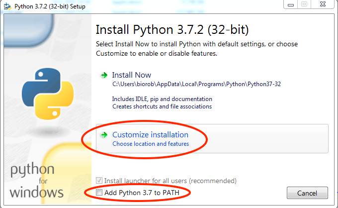
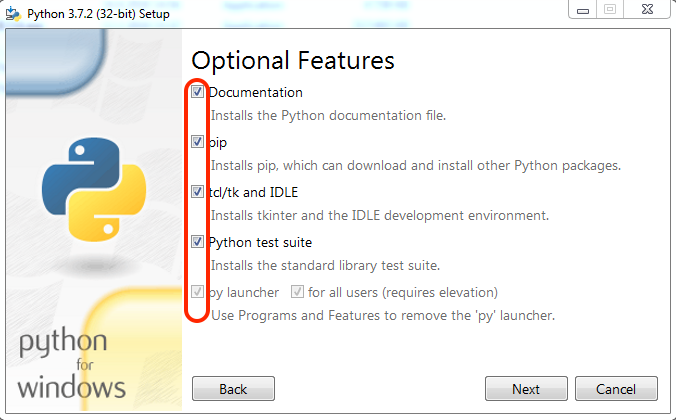
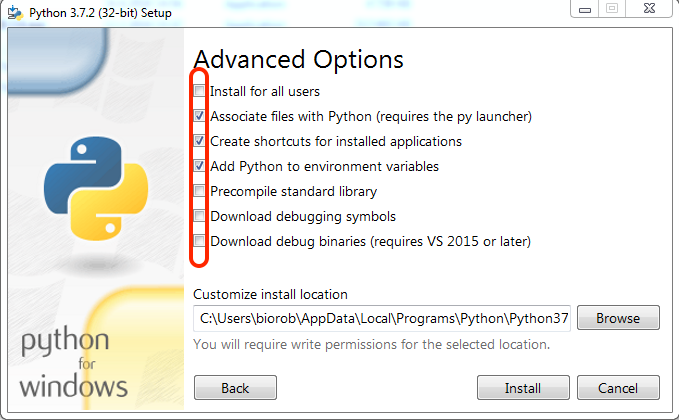
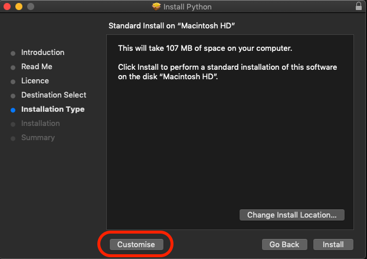
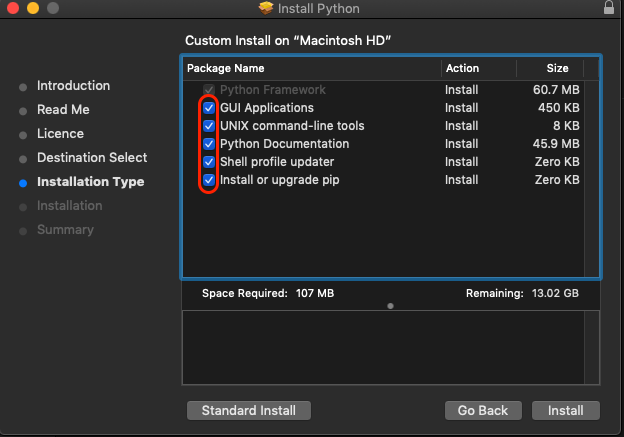

Python3 Installation
Windows
Checking if python exists
Before installing please check if you already have python installed on your computer. To do so, first open a shell like the command prompt or Git Bash.
Once the shell is open execute the following commands,
$ python3 -V
If the command returns a Python 3 version, then you can skip the Python
installation section and continue with the rest.
Python installation
To download and install Python3 use the link : Python-Windows
Note
During installation, when you see the pop up window figure 1 make sure you check on the box Add Python to PATH and you click on the customize installation option.
Next, you will see figure 2 where you need to make sure all the check boxes are ticked. Finally in the advanced options step like figure 3 you need to tick the choices like shown in the figure unless you are sure you know the implications of your choices.

Python installation customization - Step 1

Python installation customization - Step 2

Python installation customization - Step 3
Install latest version
After installation, to verify that everything is working open a shell again and run the above commands to check the python versions.
Pip3
Python has a huge repository of packages that are widely used for different functions. In order to obtain these packages there are several package managers. The one we will be using during this course will be the official package installer for Python called \(pip3\).
Checking if pip exists
If you installed Python based on the instructions above then \(pip3\) should be installed by default. Or it may have been already installed on your computer if Python had been pre-installed. To check if \(pip3\) exists, open Git Bash and execute the following command:
\(pip\) or \(pip3\) depends on your system. Typically they differentiate ones installed with python2 and python3 respectively. Since we are using python3 in this course, please use pip3 by default.
$ pip3 --version
If \(pip3\) is already installed the above command should print the version of \(pip\) along with the python and its version associated with it. Make sure that the python version is 3
MacOS
Checking if python3 exists
Before installing please check if you already have python installed on your computer. To do so open terminal application. Once terminal is open execute the following commands,
$ python3 -V
If it return a Python 3 version then you can skip the Python
installation section and continue with the rest.
Python installation
To download and install Python use the link : MacOS
During installation step make sure you choose customize option like in figure 4 and then confirm that all the check boxes are selected like in figure 5

Python installation customization - Step 1

Python installation customization - Step 2
Install Latest Version
After installation to verify if everything is working open terminal again and run the commands in section 3.1.1.
Pip3
Python has a huge repository of packages that are widely used for different functions. In order to obtain these packages there are several package managers. The one we will be using during this course will be the official package installer for Python3 called \(pip3\).
Checking if pip3 exists
If you installed Python based on the instructions above then \(pip3\) should be installed by default. Or it may have been already installed on your computer if Python had been pre-installed. To check if \(pip3\) exists, open terminal and execute the following command:
\(pip\) or \(pip3\) depends on your system. Typically they differentiate ones installed with python2 and python3 respectively.
$ pip3 --version
If \(pip3\) is already installed then the command above will print the version of \(pip3\) along with the python and its version associated with it. Make sure that the python version is 3
Linux
These instruction are for Ubuntu or other Debian-based distributions. The setup for other Linux distributions should be adapted accordingly.
Checking if python3 exists
Before installing please check if you already have python installed on your computer. To do so open terminal application. Once terminal is open execute the following command.
$ python3 -V
If the command returns a Python 3 version then you can skip the Python
installation section and continue with the rest.
Python installation
To download and install Python do the following steps:
Open terminal application
Execute the command:
$ sudo apt-get install python3
The above command will ask you to enter your system password before beginning the installation process.
After installation to verify if everything is working open terminal again and run the commands in section 4.1.1.
Pip3
Python has a huge repository of packages that are widely used for different functions. In order to obtain these packages there are several package managers. The one we will be using during this course will be the official package installer for Python3 called \(pip3\).
Checking if pip3 exists
If you installed Python based on the instructions above then \(pip3\) should be installed by default. Or it may have been already installed on your computer if Python had been pre-installed. To check if \(pip3\) exists, open terminal and execute the following command:
\(pip\) or \(pip3\) depends on your system. Typically they differentiate ones installed with python2 and python3 respectively.
$ pip3 --version
If \(pip3\) is already installed then the above command will print the version of \(pip3\) along with the python and its version associated with it. Make sure that the python version is 3